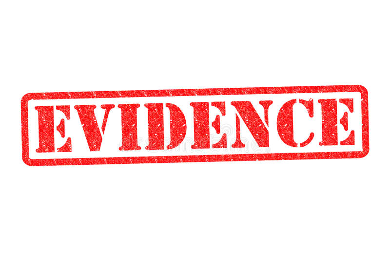
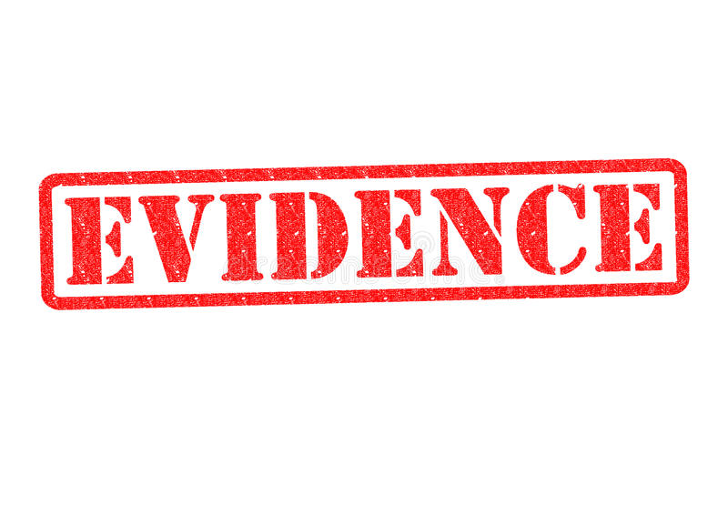

La evidencia consiste en una disposición mental del auditor, una vez obtenidos los resultados de los procedimientos puestos en práctica, que le permite no tener dudas significativas en el proceso de evaluación de todos los elementos de juicio suministrados por todo el trabajo de auditoría, que culmina finalmente con la opinión a emitir en su informe. En otras definiciones, la evidencia en auditoría es la información/documentación utilizada por el auditor para alcanzar las conclusiones en las que basa su opinión. La evidencia de auditoría incluye la información contenida en los registros contables de los que se obtienen los estados financieros, como otra información complementaria.
Universidad Nacional de Ingeniería
Facultad de Ciencias y Sistemas
Auditoría de Sistemas
Concepto de Evidencia

Concepto de Evidencia
